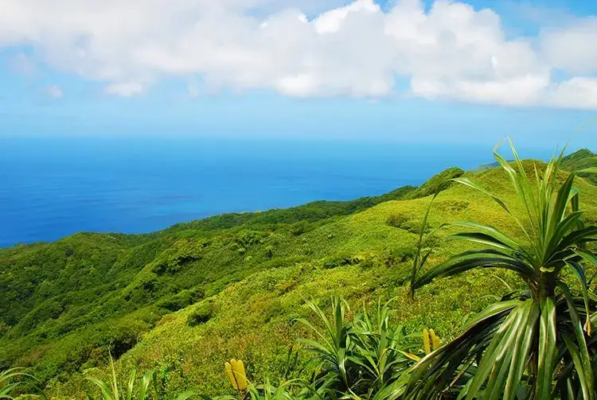
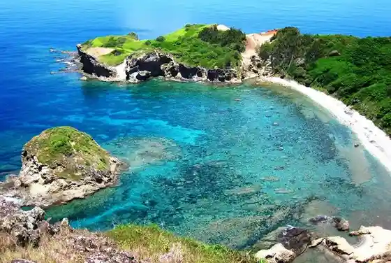
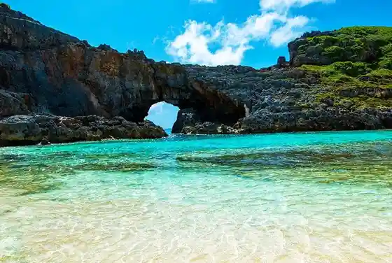
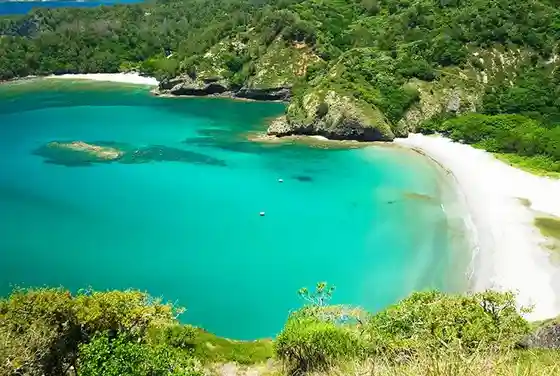
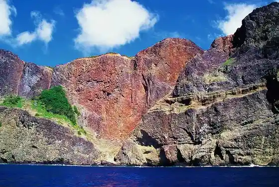

Ogasawara, Tokyo: things to do, food and stays
Ogasawara · Tokyo
Ogasawara
Highlighted on the Tokyo map.

Sights
Chibusa Yama (Haha Shima)
Sho Fuji

Nanto

Kominato Coast (Chichijima)

Senjin Iwa (Hatorokku)

Ogasawara Marine Center
Rosu Memorial Museum
Horai Ne Coast
Sakaiura Beach (Chichijima)
Weather Station Lookout (Mikazukiyama Lookout)
Ogasawara Visitor Center
Daijin Yama Park
Dining
heart rock cafe
ハートロックカフェ

Cafe in Ogasawara, Tokyo.
Marujo
丸丈

Seafood restaurant in Ogasawara, Tokyo.
Western Izakaya CHARA
洋風居酒屋CHARA

Izakaya or bar in Ogasawara, Tokyo.
Amenohi Shokudo
あめのひ食堂

Seafood restaurant in Ogasawara, Tokyo.
Bonina Reservation
Bonina

Seafood restaurant in Ogasawara, Tokyo.
Izakaya Manta
居酒屋まんた

Noodle restaurant in Ogasawara, Tokyo.
Island Deli
アイランド・デリ

Restaurant in Ogasawara, Tokyo.
USK COFFEE
ユーエスケー コーヒー

Cafe in Ogasawara, Tokyo.
Nangoku Sakaba Komo
南国酒場 こも

Chinese or Asian restaurant in Ogasawara, Tokyo.
Chichijima Gajumaru Shokudo
父島がじゅまる食堂

Japanese restaurant in Ogasawara, Tokyo.
Paku Paku
波食波食

Seafood restaurant in Ogasawara, Tokyo.
Tairyo Zushi
大漁寿司

Seafood restaurant in Ogasawara, Tokyo.
HALE

Cafe in Ogasawara, Tokyo.
Cha Ri Tei
茶里亭

Izakaya or bar in Ogasawara, Tokyo.
Shima Zushi
島寿司

Seafood restaurant in Ogasawara, Tokyo.
Auberge Sato
オーベルジュ・サトウ

European restaurant in Ogasawara, Tokyo.
Bar CREYON
バー クレヨン

Izakaya or bar in Ogasawara, Tokyo.
SWEETS FACTORY ALAMO

Sweets and bakery shop in Ogasawara, Tokyo.
Kaiyu
海遊

Noodle restaurant in Ogasawara, Tokyo.
88cafe
88 cafe

Cafe in Ogasawara, Tokyo.
Craft In Lameef
クラフト イン ラメーフ

Restaurant in Ogasawara, Tokyo.
Oshokuji Dokoro Meguro
お食事処 めぐろ

Izakaya or bar in Ogasawara, Tokyo.
MERIENDA

Restaurant in Ogasawara, Tokyo.
PAT INN
Restaurant Pat Inn

European restaurant in Ogasawara, Tokyo.
Fukuchan
ふくちゃん

Noodle restaurant in Ogasawara, Tokyo.
Chara Biyori
チャラ日和

Sweets and bakery shop in Ogasawara, Tokyo.
Ogasawara Seikyo
小笠原生協

Restaurant in Ogasawara, Tokyo.
Radford
ラドフォード

Cafe in Ogasawara, Tokyo.
Uwabe Ya
うわべ家

Izakaya or bar in Ogasawara, Tokyo.
Grace Shima no Ochaya San
グレース 島のお茶やさん

Cafe in Ogasawara, Tokyo.
Super Koiwai
スーパー小祝

Restaurant in Ogasawara, Tokyo.
Local Bakery
ローカルベーカリー

Sweets and bakery shop in Ogasawara, Tokyo.
Mandara Coffee
曼荼羅COFFEE

Cafe in Ogasawara, Tokyo.
PAPAYA MART HAHAJIMA

Restaurant in Ogasawara, Tokyo.
PAT INN

Restaurant in Ogasawara, Tokyo.
JA Nousanbutsu Kankou Chokubaijo
JA農産物観光直売所

Restaurant in Ogasawara, Tokyo.